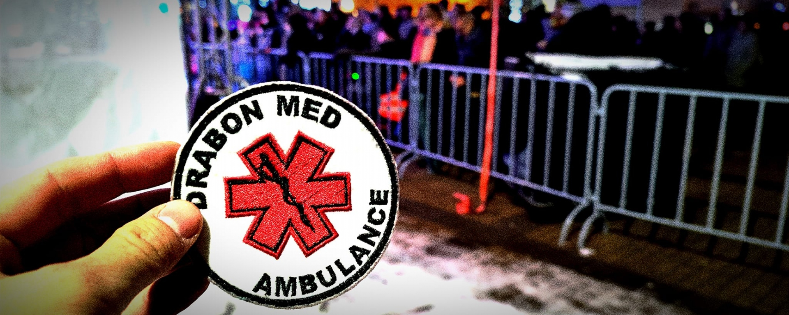

Betegszállítás – Őrzött betegszállítás
Cégünk tevékenységi körébe természetesen a betegszállítás mellett, az őrzött betegszállítás is megtalálható.
Kiemelkedő gépkocsi felszereltségünk mellett munkatársaink szakértelmére is számíthat, amennyiben Ön, vagy hozzátartozója számára kívánja igénybe venni szolgáltatásunkat.
Szolgáltatásunk megrendelési lehetősége a kapcsolat menüpontban feltüntetett elérhetőségeink egyikén történik.

Rendezvénybiztosítás
A kilátogatók, vendégek részére biztonságérzetet nyújt egy egészségügyi személyzet jelenléte, akik ha kell azonnali elsősegélyben tudják részesíteni embertársaikat.
Számos szintről beszélhetünk, amivel akár gyalogosan, földi egységekkel, vagy akár a vízen is biztosítható egy rendezvény.
Cégünk gyalogőrség, mentőgépkocsis, illetve esetkocsis mozgóőrségekben is szerepet tud vállalni.
Gyalogőrség
5/2006. (II. 7.) EüM rendelet: Épületben vagy kis területre korlátozott szabadtéren, 1001 főnél kevesebb résztvevővel. Zárt térben 300–1000 fő közötti zenés táncos rendezvénynél egy fő gyalogőrség szükséges.
Mentőgépkocsis mozgóőrség
1000–5000 fő részvétele esetén egy esetkocsi és a szükséges számú mentőgépkocsi biztosítandó, hogy a legtávolabbi pont 10 percen belül elérhető legyen.

Elsősegély oktatások
Az elsősegélynyújtás alapjai a mai világban létfontosságúnak számítanak. Az elsősegélynyújtás nincs életkorhoz kötve, nincs szakmai végzettséghez kötve, csupán az akarathoz és a tanuláshoz kötött.
Ahhoz, hogy az elsősegélynyújtás alapjait elsajátítsák, cégünk oktatások lebonyolításában tud segíteni, ami minimum 1×4 órás időintervallumot foglal magába.
Az oktatás tartalma:
- Eszméletlen betegek akut ellátása
- Kötözések, műfogások
- Allergiás reakciók kezelése
- Újraélesztés AMBU babán és oktató defibrillátoron
Megrendelhető:
- Óvodákba
- Iskolákba
- Munkahelyekre
- Táborokba
Elsősegélynyújtóhelyek kialakítása
Az elsősegélynyújtó helyek a nagy forgalmú, perem, vagy központi helyen lévő nagy áruházak, plázák, építkezések, egyéb létesítményekben kerülhetnek kialakításra.
Egy komplexumban kialakított elsősegélynyújtó helyiség biztonságérzetet, jó közérzetet nyújthat vendégeik, alkalmazottaik körében.
A kialakított elsősegélynyújtóhelyeken minden olyan egészségügyi eszköz, felszerelés elérhető, amelyek elengedhetetlenek az azonnali beavatkozások elvégzésére.
Vállaljuk egészségügyi helyiségek berendezését, illetve üzemeltetését.